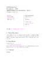
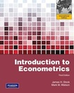

Important announcements
Final grades for the 18/06/2015 exam are out.
Description
The aim of this course is to provide an introduction to the practice of econometrics. While both theoretical and practical aspects of econometrics will be covered, emphasis will be on intuitive understanding. Concepts will be illustrated with real world applications on real world data.

For further details about the structure of the course, please download the syllabus. The syllabus contains information on this course, and in particular information on how, where and when to contact me and the teaching assistants; an outline of what will be covered in the course; a schedule of exam dates; the grading policy, and other important organizational details of the course. Please, refer to the the syllabus for any questions you have about the course
Teaching Assistants
- Siria Angino (sangino at luiss dot it)
- Claudia Vittori (cvittori at luiss dot it)
Lectures - Time and Place
| Weekday | Time | Room |
|---|---|---|
| Monday | 11:00-12:30 | A301 - A302 |
| Tuesday | 17:45-19:15 | A210 |
| Thursday | 15:30-17:00 | A407 |
Monday’s lecture are usually held in the computer labs; however, the first two weeks of class, lectures will be held in Room 407.
Textbook
The textbook we’ll be using is Stock and Watson’s Introduction to Econometrics (3rd edition) [check it out at amazon]

Stock, James H. and Mark W. Watson, Introduction to Econometrics, Addison Wesley; 3rd edition, ISBN: 1408264331
Stock and Watson’s Introduction to Econometrics is nicely organized and easy to read. However, no book is a perfect fit for everyone, and there are many other books you can look at for reference. A good example is Jeffrey Wooldridge’s Introduction to Econometrics (South Western, 4th ed.) or Undergraduate Econometrics by Carter Hill, Griffiths, and Judge (Wiley, 2nd ed.).
Computer Software

The software that will be used in this course is [http://r-project.org||R]. No prior knowledge of this software package is assumed. This package will be introduced in the TA Sessions. R is installed on all computers in A301 and A302. Since R is Open Source you can install it on your laptop or desktop. R is available for all major computing platforms: Windows, Mac OSX, and Linux. Platform specific installation help can be found at here.
Class specific notes about using R can be accessed here.
Examination Policy
You have two options:
- (Standard option) You take a final written examination on Friday, December 12th, 2014 and an oral exam on Tuesday, December 16th, 2014. Your grade will be the average of the two. You will be admitted to the oral exam if your mark on the written exam is higher than 18.
- (Midterm option) You take two written examinations, a Midterm on Thursday, October, 16th and a comprehensive final on Friday, December 12th, 2014. With this option, your final grade will be calculated as the maximum between the average of your grades on the two written exams and the final exam. In short, you do not have to take the oral exam. For instance, let suppose you earned a 24 on the midterm. Then, if you earn a 20 on the final exam, your final grade will be (24+20)/2=22; if instead you earn a 29, then your final grade will be 29.
In this case your grade in the class will be calculated as the maximum between the average of your grades in the two exams and the grade in the final. For example, suppose you earn a 24/30 on the midterm. Then, if you earn a 20 on the final, your total grade will be (24 + 20)∕2 = 22∕30; if, instead, your score on the final is 29 your final grade will be 29∕30.
In order to be eligible for the midterm option:
- You must turn in all the problem sets on time
- You must score more than 18 on the midterm exam (if you score less than 18, you will have to pass both the written and the oral examinations).
TA session
The TAs will lead a weekly practice session which will be held in the computer labs (TBA). The sessions are an important part of the course and regular and attendance is strongly advised. During these sessions, the TA will review the concepts introduced in class and solve applied problems using R. Sessions are also useful for asking questions about the [problem sets][].
There are two sessions both held at the same time: Monday, 11:00-12:30. Which of the two sessions you have to attend depends on the initial letter of your last name.
- Monday, 11:00-12:30, A301 -> A–F
- Monday, 11:00-12:30, A302 -> G–Z
The TA sessions will start on September 29th, 2014. On September 15th, 2014 and September 22nd, 2014 we will have regular lectures in room 407.
Problem Sets
There will be weekly problem sets. Problem set are posted here on Mondays and are due back by noon on the following Monday. They have to be handed out to the TA during the session you are supposed to attend.
Problem Set #7. [Question sheet [Solution sheet
Office hours
Office hours are opportunities for assistance with problem sets and the course material in general. Office hours ordinarily take place on one of the faculty offices located in Viale Romania campus.
Day Time
-------------------------------------------------
Giuseppe Ragusa Thursday 17:00-18:00
Siria Angino Monday 13:00-14:00
Claudia Vittori Monday 14:00-15:00
-------------------------------------------------
Lecture content
This is a basic guide to the content of my lectures.
n. date topic ----------------------------------------------------------------------- 01 M 15 September 2014 Introduction and review of statistics 02 T 16 September 2014 Review of statistics I 03 Th 18 September 2014 Review of statistics II 04 M 22 September 2014 Bivariate regression I 05 T 23 September 2014 Bivariate regression II 06 Th 25 September 2014 Bivariate regression III 06 T 30 September 2014 Endogeneity and causality 08 Th 2 October 2014 Multiple regression I 09 T 7 October 2014 Multiple regression II 10 Th 9 October 2014 Nonlinear regression models I 11 T 14 October 2014 Nonlinear regressio nmodels II 12 Th 16 October 2014 Midterm 13 T 21 October 2014 Assessing regression studies 14 Th 23 October 2014 Panel Data I 15 T 28 October 2014 Panel Data II 16 Th 30 October 2014 Binary dependent variable I 17 T 4 November 2014 Binary dependent variable II 18 Th 6 November 2014 Instrumental variables regression I 19 T 11 November 2014 Instrumental variables regression II 20 T 18 November 2014 Instrumental variables regression III 21 Th 20 November 2014 Instrumental variables regression III 22 T 25 November 2014 Program evaluation I 23 Th 27 November 2014 Program evaluation II 24 T 2 December 2014 Program evaluation III --------------------------------------------------------------------------
Lecture slides
Lecture 5 [Updated 09/30/14]
Lecture 6 [Updated 10/07/14]
Lecture 7 [Updated 10/07/14]
Lecture 8 [Updated 10/07/14]
Lecture 9 [Updated 10/09/14]
Lecture 10 [Updated 10/15/14]
Lecture 11 [Updated 03/11/14]
Lecture 12 [Updated 03/11/14]
Lecture 13 [Updated 03/11/14]
Lecture 14 [Updated 03/11/14]
Datasets
These are datasets frequently used during lectures and review sessions